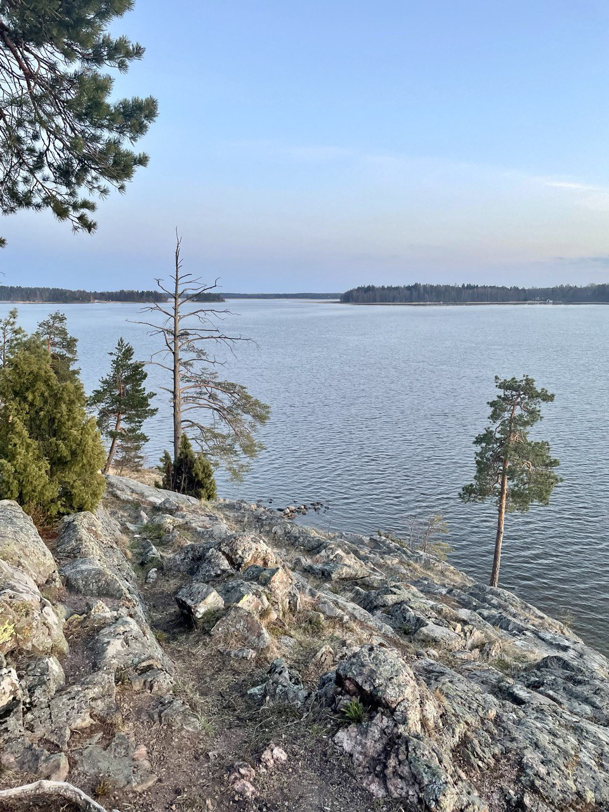
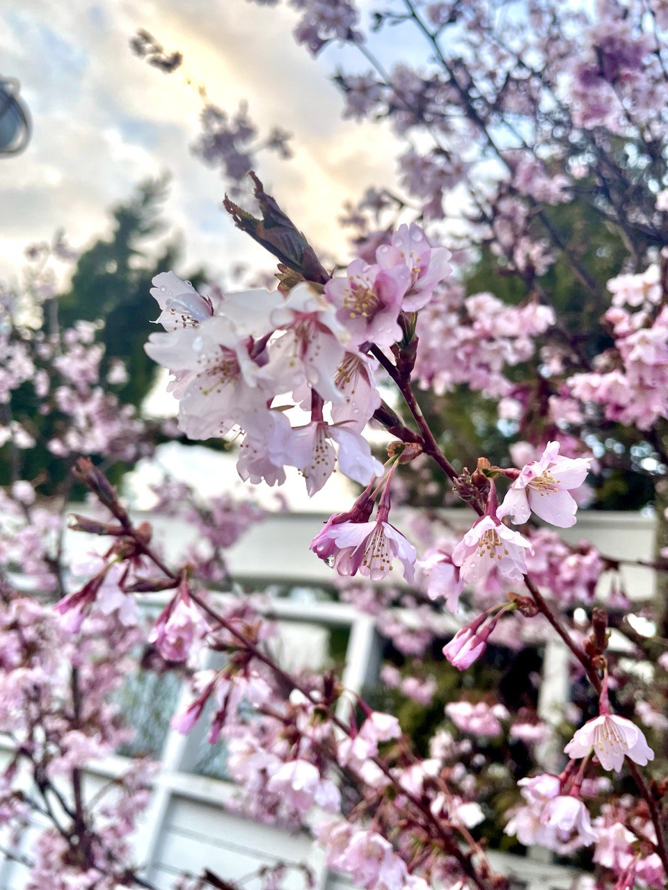
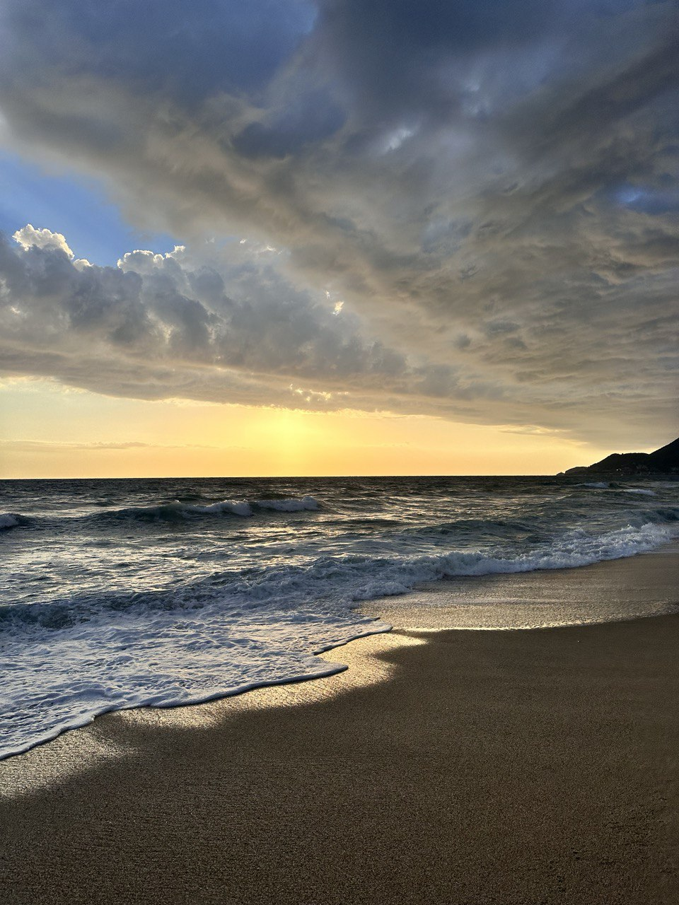

Hi there! I'm a passionate nature photography enthusiast who finds joy in capturing the beauty of the world around us. Whether it's the delicate bloom of a flower, the serene stillness of a lakeside, or the dramatic colors of a sunset, I love freezing these moments in time to share the magic of nature's artistry. Through my lens, I aim to inspire others to appreciate the small details and grand landscapes that make our planet so extraordinary.
My Github ProfileA tranquil lakeside scene featuring rugged rocks, scattered pine trees, and a vast expanse of water under a clear blue sky. The view evokes a sense of stillness and natural beauty
A close-up of delicate pink cherry blossoms adorned with tiny droplets of water. The blurred background highlights a calm, serene springtime setting with soft sunlight filtering through
A dramatic seaside sunset with golden hues spreading across the sand and water. The rolling waves add depth and movement, creating a serene and picturesque coastal moment
